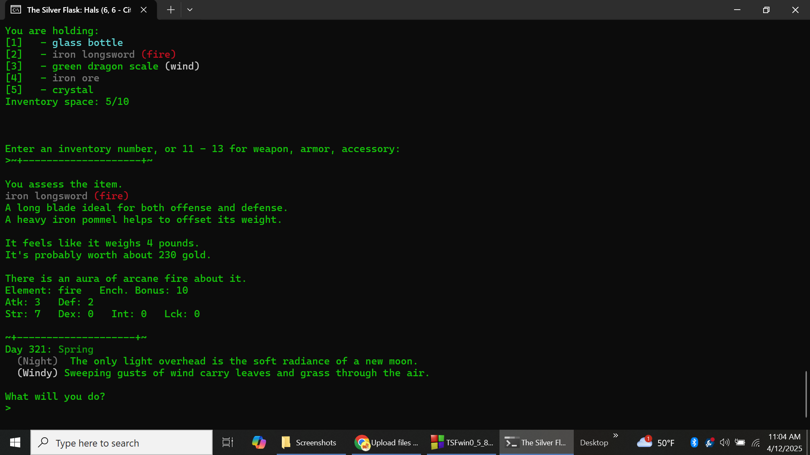
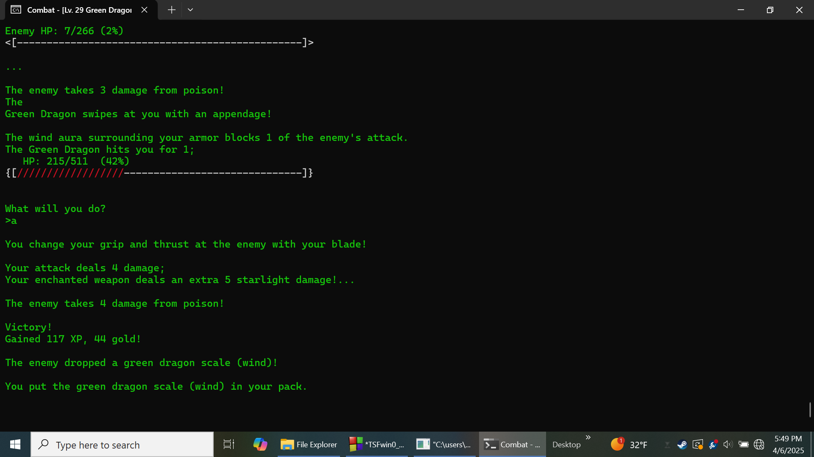
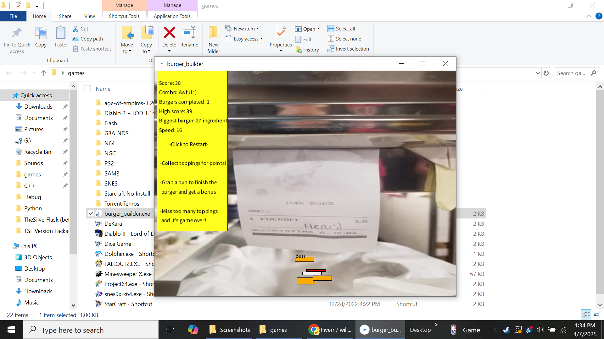
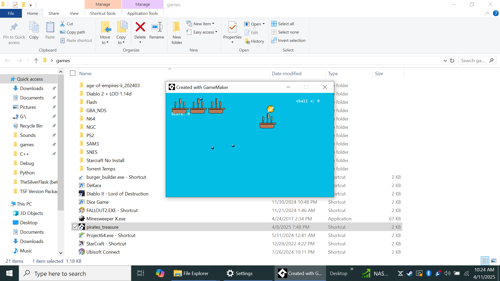

Faction Seven Entertainment
Focus, Dedication & Third Party Software™
Media
Not sure? New to the site? Check out this random selection -> Loading...
Games:
[Click images to enlarge]
 
The Silver Flask
A classic sword & spell adventure that embraces a revolutionary style - the images are all processed in your brain...

Burger Builder
Stack 'em to the heavens! Made with Processing.

Pirates' Treasure
Avoid the deadly cannons of the British fleet while you gather scattered gold lost at sea.
This one is purely proof of concept, done in a single drunken evening.
(Made with GameMaker - you can find it on the 'links' page)

Temple Walk
Collect lost treasure and avoid deadly traps; plays in the console at a blistering 30fps.
Super Action Man 3
A console RPG prototype that was abandoned in its early stages
Writing:
The Lord Ironbark series A series of rousing adventures featuring an English magnate and two German spies.
Dreaming Sky What do you do after a quiet divorce?
A Bad Analogy Every end is a new beginning.
Kings of Rats and Thieves This city stinks sometimes.
Thanks for a good day A poem about smiling.
Soulspring A poem about loss.
Thunder and Rain A very short story about surveillance.
Dear Mister Andrews Please, stop writing us.
I Promised Maybe I'll get it right this time, but it could never be enough.
Diary Entry #266 Whose f****** diary is this?! (explicit)
Caravan The sands are harsh and unforgiving.
The Forbidden Grimoire These were the only pages left - do you dare approach the threshold of arcane knowedge?